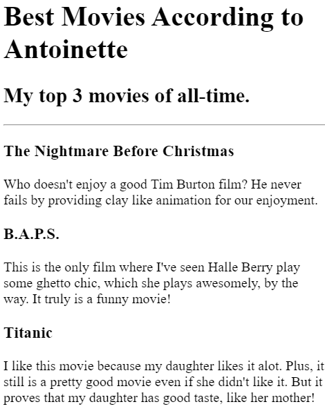
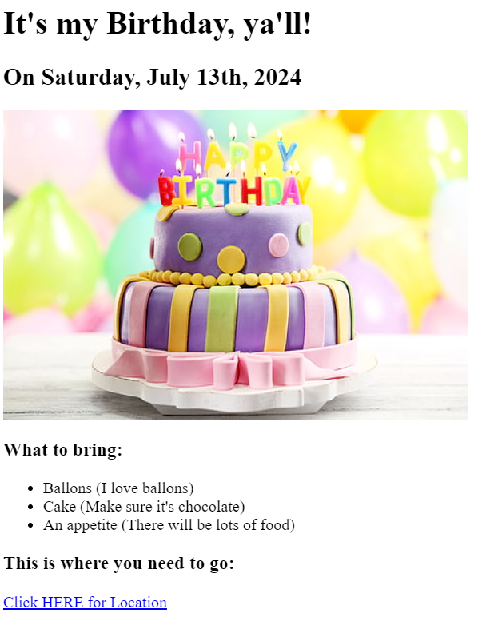

Antoinette Terrell Resume

I'm a Web Developer!
Objective
Innovative and dedicated web developer and advanced certified numerologist with over 15
years of experience in web design and 6 years in numerology. Specializing in creating
luxurious, customized websites for business owners selling high-end products and services,
I leverage numerological vibrations to generate the perfect look, feel, and functionality
for attracting ideal customers. My unique blend of skills ensures a competitive edge,
helping businesses stand out and achieve significant revenue growth. Seeking to bring
my expertise to a dynamic team, contributing to the creation of exceptional digital
experiences that drive success and profitability.
Education
High School Diploma
Miami Carol City Senior High
Graduated: 2004
Level 2, Advanced Certified Numerologist
Numerology University
Certified 2018
Certified Web Developer
AppBrewery Web Development Bootcamp
Certified 2024
Work Experience
Gifted Hands Total Clean & Sanitation
Logo and Website Creation (+)
- Created a fully functional, professional-looking website for Gifted Hands Total Clean & Sanitation in 2023
- Ensured the site was fully SEO optimized to attract organic traffic and big corporate clients.
- Accurately displayed the client’s work to highlight their strengths and services.
- Successfully launched the website, which generated significant organic traffic within one week.
- Helped the client land their first big corporate client shortly after the website went live.
- Exceeded client expectations by helping them reach their goals and attract additional business.
Click here to see his site
Skills
Logo Creation:
Desiging unique and memorable logos that capture the essence of your brand.Business Card Creation & Printing:
Crafting professional business cards and managing the printing process to ensure high-quality results.Numerology Readings:
Providing personalized numerology readings for both personal and professional use to guide decision-making and enhance success.Website Design:
Building luxurious, fully customizable websites from scratch to meet every client's unique needs and vision.SEO Optimization:
Implementing SEO strategies to improve website visibility and drive organic traffic.Local SEO Services:
Enhancing local search presence to attract nearby customers and clients.Social Media Presence Service:
Developing and managing social media strategies to strengthen online presence and engage with the target audience.
Portfolio
- Movie Ranking Project

- Online Birthday Invitation

More to Come